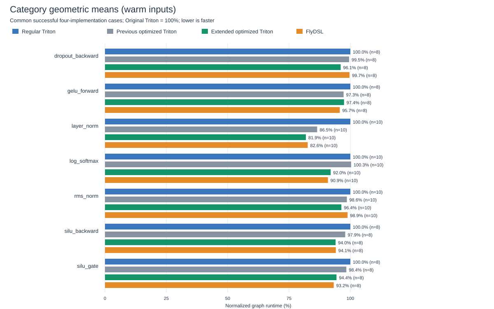

All math functions retain the existing precision policy. Lowering/layout changes and balanced cache tuning are opt-in. Four implementations are measured in rotating rounds with the same inputs: regular Triton, previous optimized Triton, extended optimized Triton, and FlyDSL. Negative percentages are regressions.
These are compiled operation graphs on one MI355X, not full-model training throughput. Accuracy checks use three input seeds. Direct GPU-event timing and CUDA graph replay are reported separately. A 256 MiB flush precedes each sample; warm measurements then touch input storage. Mutation restores occur before timing.
62 cases; 0 variant failures. Per-case comparisons | Per-operation summary | Raw timing CSV | Failures
| Operation | Cases | vs regular Triton | vs previous optimized Triton | vs FlyDSL |
|---|---|---|---|---|
| dropout_backward | 8 | 3.94% | 3.46% | 3.62% |
| gelu_forward | 8 | 2.56% | -0.18% | -1.81% |
| layer_norm | 10 | 18.13% | 5.33% | 0.92% |
| log_softmax | 10 | 8.02% | 8.32% | -1.21% |
| rms_norm | 10 | 3.64% | 2.26% | 2.55% |
| silu_backward | 8 | 6.01% | 4.01% | 0.10% |
| silu_gate | 8 | 5.63% | 4.07% | -1.21% |

Direct execution: all per-operation graphs | CUDA graph replay: all graphs